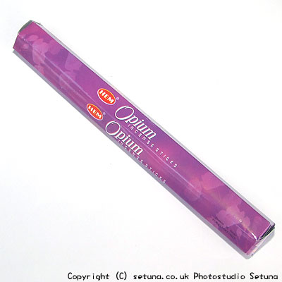

そのまま嗅ぐと乳香がくすんだような匂いをしています。
花っぽい香りもかすかにしますがホンのわずかです。
火を点けると焦げ臭く、まるで、麦茶工場の近くを通りかかった時のような匂いがします。
これも最後まで焚き続けるにはツライ！です。(涙)
これを解消するのに使ったのはヘム社の「シバ香」です。
それまでの匂いとはうって変わり、野に咲く花を思わせるような可憐で甘やかな香りが部屋全体に広がり始めます。
それは、まるで花の精が羽を広げる様にあっという間に見事に広がります。
この、いい香りの残り香はそのまま長めに続くタイプになります。
他にもいいなと思うものもありましたが私としてはこの香りが一番お勧めのような気がしますね。
